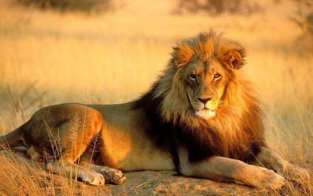
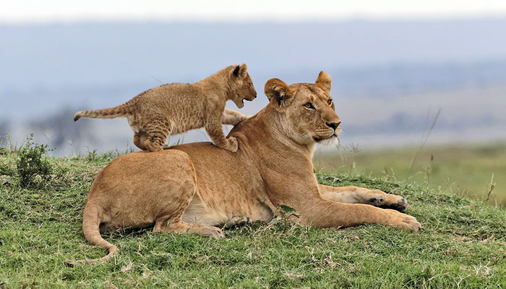
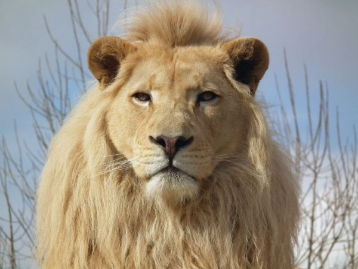
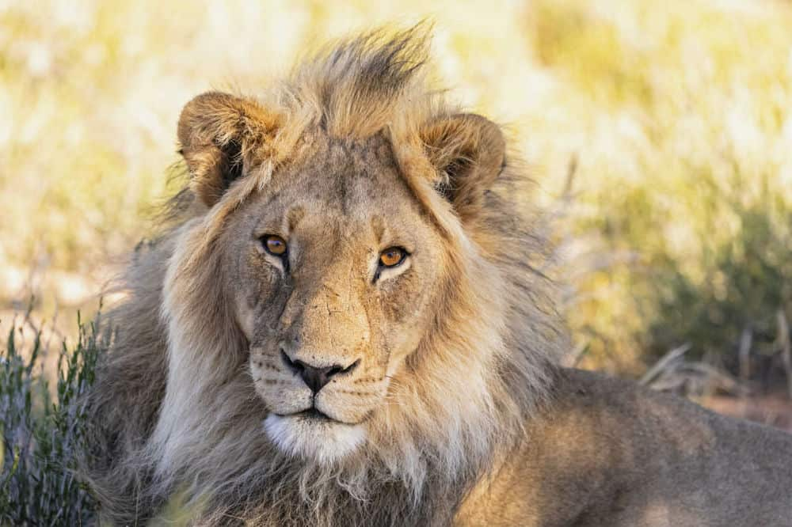

|
非洲獅(Panthera leo)
屬貓科動物中的豹亞科哺乳動物，以群居為主，分布於非洲、伊朗及印度等地。  生活型態 非洲獅一般群居生活，一個獅群中大約有9-20隻獅子，多隻成年雌獅，1-4隻成年雄獅，和幾隻幼崽。  生存危機
非洲獅的數量在減少，但是它們目前並未被列為瀕危或受威脅物種，但保育主義者向美國漁獵局發出警告說：「如果現在不採取行動的話，非洲獅極有可能瀕臨滅絕。」  其他介紹
化石的證據表明，最早的獅子狀貓科動物（化石）在上新世晚期（5.0-180萬年前）出現在東非坦桑尼亞的Laetoli。 在與人類大體相似的模式下，獅子在中更新世（800-100,000年前）期間從非洲遷出到歐洲，亞洲和北美，一直延伸到南部，直到秘魯，並在此期間成為分佈最廣的大型陸生哺乳動物。晚更新世（100-10年）。 最近的遺傳研究表明，在更新世末期，至少有兩種不同的獅子棲息在歐亞大陸西部：Holarctic洞穴獅子（P. l。spelaea）和現代獅子（P.l. leo）。 有人認為，現代獅子（約55至200吉爾）的種群瓶頸使一頭獅子可以代替非洲和西南歐亞大陸的老年人群。 這種現代獅子進化的單一起源替代模型提供了與人類進化的“非洲最近起源”模型（與“多區域進化”模型相比）的相似之處，在現代模型中，現代智人在非洲進化了。 200公斤，並繼續取代其他地方的原始人（例如尼安德特人）。 
|